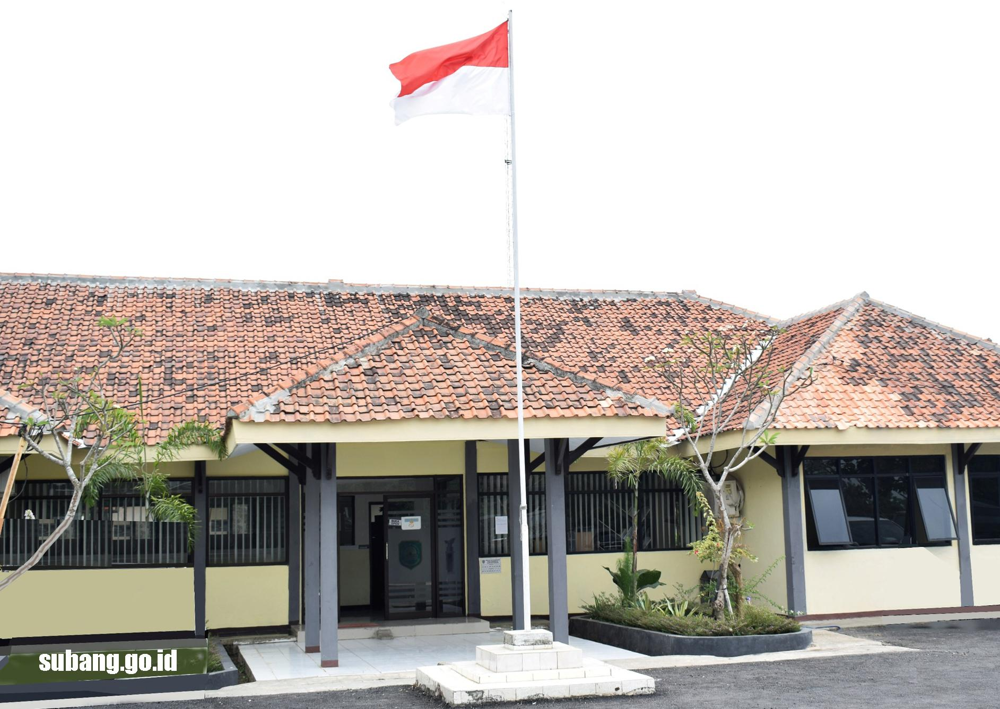

Kecamatan Patokbeusi merupakan salah satu kecamatan yang berada di Kabupaten Subang, Provinsi Jawa Barat. Kecamatan ini memiliki wilayah yang cukup luas dengan masyarakat yang mayoritas bekerja di bidang pertanian dan perdagangan.
Sejarah Kecamatan Patokbeusi berkembang seiring dengan perkembangan Kabupaten Subang. Pada awalnya wilayah ini dikenal sebagai daerah pertanian yang subur karena memiliki sumber air yang cukup baik dan lahan yang luas.
Nama Patokbeusi sendiri memiliki arti yang unik dalam bahasa Sunda. Wilayah ini menjadi salah satu daerah yang memiliki peranan penting dalam kegiatan ekonomi masyarakat sekitar terutama dalam sektor pertanian dan usaha kecil menengah.
Perkembangan infrastruktur di Kecamatan Patokbeusi terus mengalami peningkatan dari tahun ke tahun. Jalan, fasilitas pendidikan, dan pelayanan masyarakat semakin berkembang untuk mendukung kebutuhan warga.
Saat ini Kecamatan Patokbeusi terus berupaya meningkatkan kualitas pelayanan publik serta pengembangan potensi daerah agar dapat menjadi wilayah yang maju, aman, dan sejahtera bagi masyarakatnya.